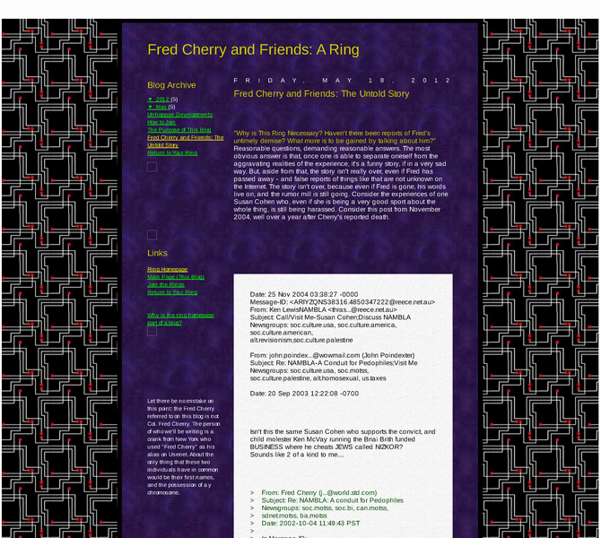

Previewing: Fred Cherry and Friends: The Untold Story Previewing: Fred Cherry and Friends: The Untold Story 
Use the left/right red arrow controls to navigate through this ring - Click the preview image to visit the member site.

A ring for pages written about some of the "greats" in the history of homophobia, named after the man who sued Mayor Ed Koch of New York and Janet Reno for their alleged roles in "the Organized Homosexual Conspiracy of America", and some debunking of the rumors they've started at the expense of others.
Fred Cherry and Friends: The Untold Story owned by:
 tim_skirvin_ring tim_skirvin_ring
A member of the original webring since 05/16/2012.
|
|